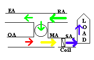
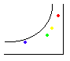

AHU and Psychrometric Chart Simulation

The sideways "H" to the left represents the flow of air
through the Air Handling Unit (AHU). The moving circle represents
the nominal flow (cfm) of air through the system. A fraction of the
Return Air (RA) is discharged outside as Exhaust
Air (EA) and replaced with fresh Outside Air
(OA). The Mixed Air (MA) is cooled and
dehumidified as it passes through the coil to become Supply
Air (SA). As the air flow absorbs heat and humdity from the
building, the air returns to the RA condition. The color of the circle
changes to represent the temperature changes as the air flows through the
loop.
The
process steps are also shown on the psychrometric chart at the right. All
of the air states are color coded and labeled.. You can adjust the
conditions and flows by clicking on the buttons below the AHU. The
top button changes the percent of Outside Air, which affects the location
of the Mixed Air state on the psychrometric chart and can also be seen
on the circle as it passes through the AHU as well as . The next
two buttons adjust the Supply Air Temperature
(SA T) and air flow (CFM) rate respectively. These are
normally the only two parameters under the control of the building operator.
The middle two buttons allow you to observe the effect of outside air conditions
by changing the Dry Bulb Temperature (OA T) and the Wet Bulb
Temperature(OA WB). The bottom two buttons allow you to see the
effect of various building loads as represented by the Total Load
(tons) and the Sensible Heat Factor (SHF). The
final button allows you to adjust the operating speed of the simulation.
 The
rectangular box on the psychrometric chart approximately represents the
Comfort Zone. Your goal is to keep the Room Air (RA) conditions
(green dot) within the comfort zone by adjusting the supply air flow and
supply temperature. The Comfort Zone is also super-imposed on the
Sensible Heat Factor protractor above the psychrometric chart. The blue
dot to the left represents the cooling vector in BTU/hr for a given SHF
being supplied to the building by the AHU. You control this vector
with the top two buttons on the panel. The black open circle represents
the building load vector that you control by the bottom two buttons on
the panel. In equilibrium, the blue circle will be within the open
circle.
The
rectangular box on the psychrometric chart approximately represents the
Comfort Zone. Your goal is to keep the Room Air (RA) conditions
(green dot) within the comfort zone by adjusting the supply air flow and
supply temperature. The Comfort Zone is also super-imposed on the
Sensible Heat Factor protractor above the psychrometric chart. The blue
dot to the left represents the cooling vector in BTU/hr for a given SHF
being supplied to the building by the AHU. You control this vector
with the top two buttons on the panel. The black open circle represents
the building load vector that you control by the bottom two buttons on
the panel. In equilibrium, the blue circle will be within the open
circle.
Obviously the real goal in our business is to control
the system costs. But that throws another whole level of complexity
onto the problem, and this is probably enough for today! We have
pencilled up an economic model, but it isn't quite ready for prime time
yet. So play with this for now and visit often for new toys as they
are developed. If you have questions or comments, drop us an email.
Have a thermodynamically comfortable day!